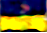

This Country Does Not Exist is an AI experiment involving Generative Adversial Neural Networks and Recurrent Neural Networks to generate new countries. Specifically country names and flags

For this project, I used a dataset of over 500 32x32 images of flags from all over the world, you ccan download the dataset I used here.
For this project I used HyperGAN as my GAN of choice and char-rnn-tensorflow as my rnn of choice
Burgyzasia
Irsyea
Doydorecas
Ceminia
